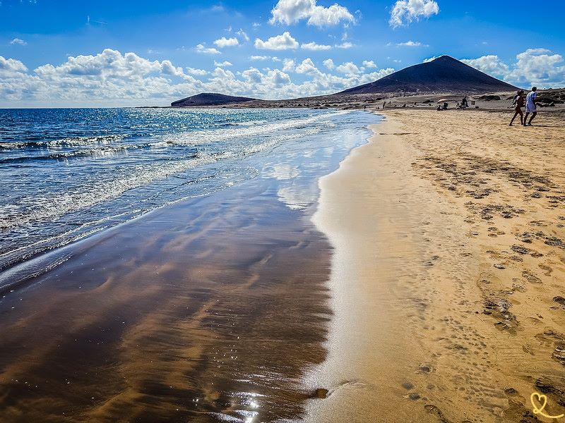
El Médano
A popular destination for its ideal wind conditions, Playa del Médano is a renowned spot for water sports. With its fine sand and shallow waters, it's ideal for families and thrill-seekers alike. We loved the stunning view of Montaña Roja. It's a beach that invites relaxation and contemplation.
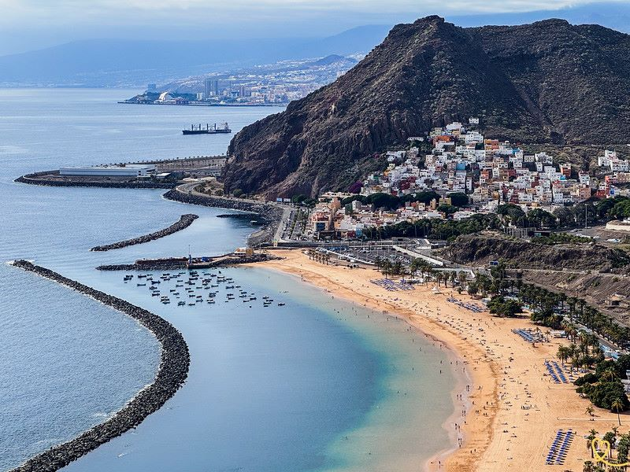
Las Teresitas
This magnificent beach of golden sand imported from the Sahara, stretching for almost a kilometer, is one of the region's jewels. We particularly appreciate its gentle, gradual slope as you enter the water. It's perfect for a family outing with swimming, water polo, beach volleyball, pedal boats and other modern facilities.
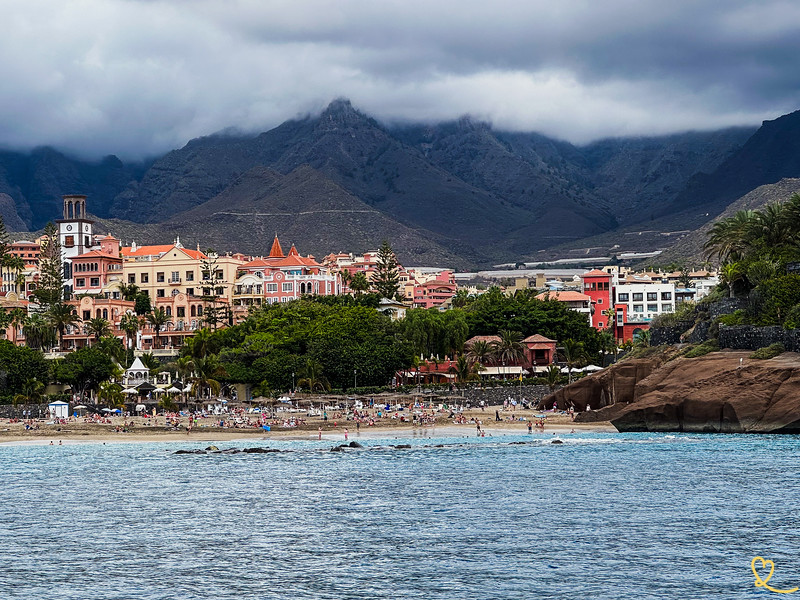
Duque
Fine golden sand and calm turquoise waters: this well-kept beach offers a luxurious setting, surrounded by high-end hotels and chic boutiques. This beautiful extended beach is divided into 2: Playa del Duque North and Playa del Duque South. It is well equipped.
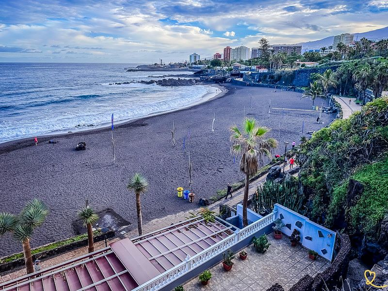
Jiménez
Playa Jimenez is our favorite in Puerto de la Cruz. It is the furthest from the center. You can recognize it by the colorful facades at the end of the promenade overlooking it. We went there in the early hours of the morning and really appreciated its peaceful atmosphere.
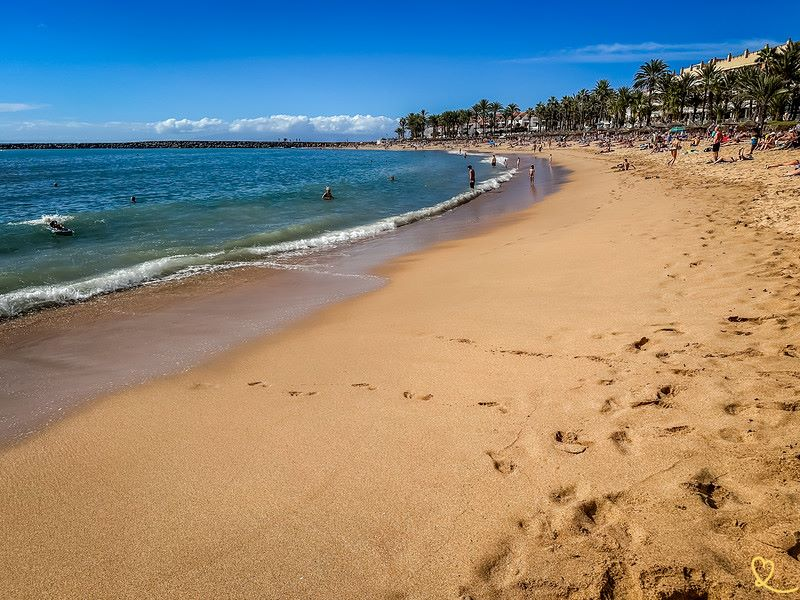
Del Camison
Playa del Camison pleasantly surprised us with its charm. This small beach of golden sand, nestled between two rocky promontories, offers calm, crystal-clear waters. We appreciated its family atmosphere and proximity to amenities, while remaining away from the hustle and bustle of the big seaside resorts.
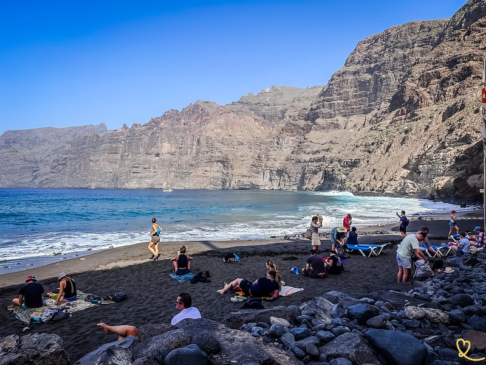
Los Guios
Located at the foot of the impressive Los Gigantes cliffs, Playa de Los Guios offers a breathtaking setting. We were fascinated by the volcanic rock walls overlooking the beach. One section was closed at the time of our visit due to falling rocks. Playa de Los Guyos is also the ideal starting point for water sports activities.
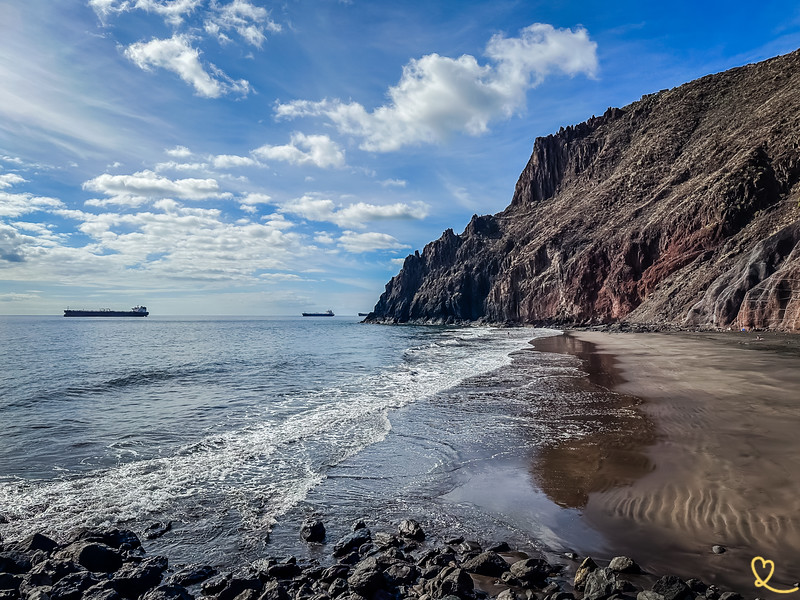
Las Gaviotas
This beautiful black sand beach is a little corner of paradise surrounded by impressive cliffs. We were won over by the natural, unspoilt setting of Playa de Las Gaviotas. Although the TF-121 road leading to it is narrow and winding, it's well worth the detour. We fell under the spell of this haven of peace, cut off from the world.
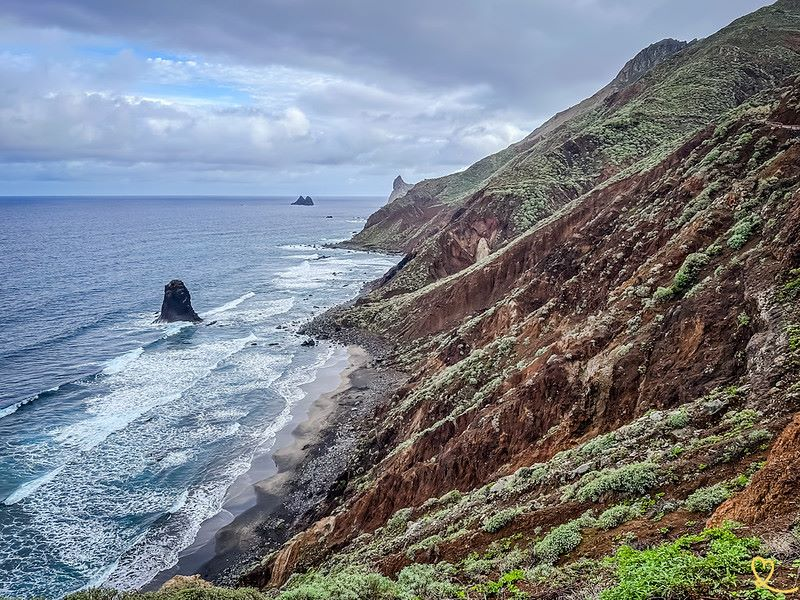
Benijo
Playa del Benijo seduced us with its wild beauty and secluded atmosphere. This black sand and pebble beach offers breathtaking scenery with its spectacular rock formations and sculpted cliffs.
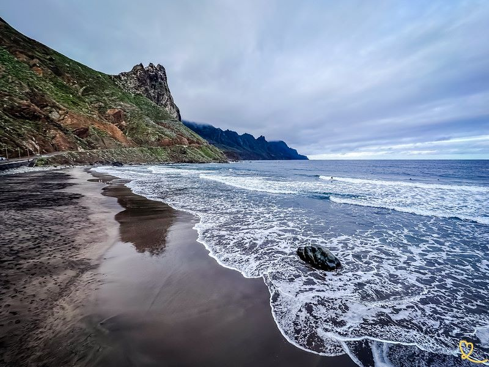
Roque de las Bodeguas
In the Anaga massif, we were really seduced by this wild beach with its deep black sand, a far cry from the touristy beaches of the south. On one side the view of the Anaga cliffs, on the other a rocky promontory that gives it its name.
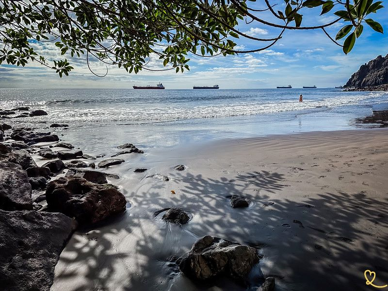
Cueva del Agua
This secluded beach, to the east of Playa de La Gaviotas, is one of our favorites hidden away in the Anaga massif. We were seduced by its fine black sand and natural charm. Although unsupervised and unequipped, it offers good swimming conditions.
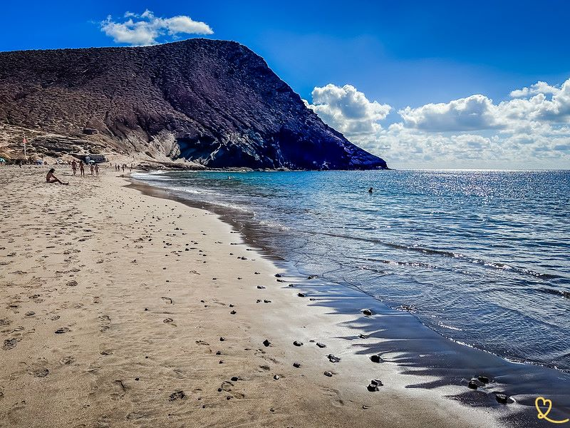
Tejita
Playa de la Tejita won us over with its natural, unspoilt character. One of Tenerife's largest natural beaches, this long golden sandy beach offers a spectacular setting with the Roja mountain in the background.